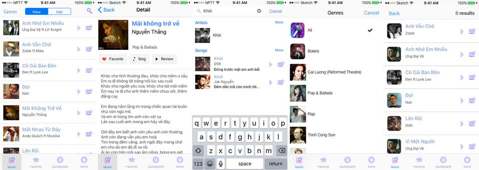

Sau một thời gian làm việc với các bạn trẻ trong công ty, các bạn nhận xét thiết kế giao diện trọng nhất là tính thẩm mỹ. Thường thì sản phẩm của các bạn về hình thức đều ổn. Tuy nhiên, thiết kế không giải quyết được vấn đề gì cả. Mình quyết định chia sẻ phương pháp được học từ thầy Nguyễn Văn Vũ trong môn Thiết Kế Giao Diện. Đối với mình, thầy là một trong số ít giảng viên xuất thân đúng từ ngành Software Engineering, góc nhìn thực tế và đúng tâm lý người dùng.

Karayolo là gì?
Karayolo (Kara - Yolo) là đồ án cuối kỳ của môn Thiết Kế Giao Diện. Môn này chia làm 5 đợt nộp bài, mỗi đợt gọi là 1 PA. Kết quả môn này của nhóm mình là 398/400. Chém gió xí thôi :D
Đề tài thì tụi mình được tự chọn, nhưng theo một số tiêu chí sau:
-
Vấn đề cần giải quyết có tính thực tế, có người dùng thực sự đang gặp phải. Khi đã xác định được bài toán, cần đánh giá lại để xem liệu đó là vấn đề thực sự hay chỉ là biểu hiện của một vấn đề cốt lõi nào.
-
Chương trình phải thể hiện được tầm quan trọng của giao diện
-
Tập trung vào giao diện, các thuộc tính khác không quan trọng
-
Không quan tâm nhiều đến xử lý bên trong của ứng dụng
-
Có tính chất sáng tạo (tất nhiên phải đảm bảo được các thuộc tính của usability)
-
Ứng dụng trên Web, hoặc Mobile
-
Đối với các ứng dụng đã tồn tại: phải đề xuất những thay đổi lớn so với giao diện hiện tại.
Mô tả ý tưởng
Sau khi khảo sát, phỏng vấn, đóng vai,... tụi mình đã gom lại được thành 3 nhóm vấn đề chính khi đi hát karaoke như dưới đây:
-
Tra cứu bài hát
-
Muốn quản lý danh sách bài hát đã chọn
-
Quản lý phiên

Tra cứu bài hát
Hiện nay, các quán karaoke vừa tìm kiếm bằng cách nhìn cuốn sổ dày cộm rồi bấm remote, vừa có màn hình cảm ứng ngồi chọt chọt. Dưới đây là một số bất cập khi tìm bài hát.
-
Không nhớ tên bài hát
Mình chơi nhạc còn nhiều khi chả biết tên bài hát nữa là. Những lúc đó, chỉ mong có cái gì đó để ngân nga giai điệu rồi nó nhận diện đúng bài.
-
Lật cuốn catalog để tìm bài hát mới
Huhu... Nhiều khi đi cả chục đứa mà có 1 cuốn để dò mã à. Đứa nào thuộc mã thì hát nhiều bái nó thích. Rồi đứa này lưa.. làm mấy đứa kia ngồi chờ thấy phát nản. Chưa kể có chỗ gắn màn hình cảm ứng... có đứa ngồi trấn là khỏi đứa nào chọn bài luôn, chưa kể bu đông địt thúi nữa :D
-
Mã số bài hát phụ thuộc vào thiết bị (5 số, 6 số,...)
Cái này bực bội khi cầm remote bấm.. Bấm chậm là nó reset phải nhập từ đầu.
-
Cần review bài hát
Cái này hổng phải là bài đó hay/dở gì đâu nghen. Mà là muốn biết lời nhạc, rồi bài phối. Cụ thể hơn, mình muốn hát bài Phượng Hồng với bản phối của Bằng Kiều, trong khi đó thì chỉ có bài của Mr.Đờm Vĩnh Biệt. Về phần lời, có nhiều bài cùng tên nhưng khác lời như bài Làng Tôi của Đỗ Trung Quân và Văn Cao.
Muốn quản lý danh sách bài hát đã chọn
Có lúc đi ca, muốn tua lẹ hát nửa bài để còn hát nhiều, ngồi chọt chọt trên remote lâu quá. Cứ như là bạn dùng remote để code trên màn hình console và chỉ di chuyển được bằng phím mũi tên với Enter. Thiệt nghiệt ngã quá mà.
-
Danh sách có trùng bài nào không
Một nhu cầu chính đáng, tao với mày cùng đóng góp mà mắc công mày hát nhiều lần hơn tao. Chưa kể tốn thời gian cầm remote để Next nữa. Bà mẹ cái remote!!!
-
Muốn xoá để hát bài khác
ĐM cái remote... chưa kể phải đập đập mới chạy :p Nói chứ giống như thao tác với danh sách trên màn hình console. Huhu!!!
-
Điều khiển nhạc (tone, tempo,...)
Có nhiều bạn hát không tới, hoặc thích hát chậm chậm cần chỉnh lại bài đang hát. Nhưng mà với cái remote hoặc giao diện cảm ứng hiện tại thì mấy bạn mù nhạc lý sẽ rất khó xài.
Quản lý phiên
Chẳng qua là quản lý túi tiền của cả nhóm.
-
Thời gian đã hát
Thời gian là vàng, là bạc. Để còn biết tính tiền :D
-
Số tiền phải trả là bao nhiêu?
Thời gian chưa đủ. muốn biết tổng tiền sau khi hát, tiền nước, bánh trái này nọ.
Giải pháp hiện có
Don't Reinvent The Wheel, Unless You Plan on Learning More About Wheels
Tại sao lại có vụ phát minh bánh xe ở đây? Đơn giản vì bạn có thể đi ra tiệm mua cho nhanh, chỉ phát minh/cải tiến khi nó không giải quyết được vấn đề của bạn. Tương tự trong trường hợp của Karayolo. Tụi mình cũng khảo sát một số ứng dụng trên thị trường như sau:
Nói chung là... showbiz thiệt là.. ai cũng xạo quần xạo heo... hình như lộn tiệm. Nói chung là, 2 ứng dụng trên, chỉ thao tác độc lập với thao tác quản lý một phiên đi karaoke. Thiết nghĩ, các bác nên tạo thành một hệ sinh thái như là XXXPad chọn bài, kết nối với XXXServer để tính tiền, chọn bài, gọi món giống như ứng dụng quản lý tiệm net như NetCafe, CSM của Zing.
Giải pháp của nhóm
Với các bất cập trên, nhóm mình muốn đề xuất một ứng dụng có thể kết nối với máy chủ của quán, cho phép mọi người đi hát dễ dàng thao tác. Sơ khởi thì ứng dụng này sẽ có các chức năng sau:
-
Phân cấp danh sách bài hát theo Vol mới nhất
-
Review bài hát trước khi chọn (nhạc, lời bài hát)
-
Lưu danh sách bài hát yêu thích
-
Gợi ý những bài hát đang hot
-
Góp ý với quán
-
Quản lý danh sách bài hát trong hàng đợi
-
Hẹn giờ cho phiên

Sơ đồ tổng thể của hệ thống Karayolo là như vậy. Mở rộng ra, mỗi server là một chi nhánh trong hệ thống.
Ở phạm vi bài viết này, mình chỉ đề cập đến việc thiết kế giao diện cho ứng dụng trên mobile trong hệ thống trên.
Tham khảo